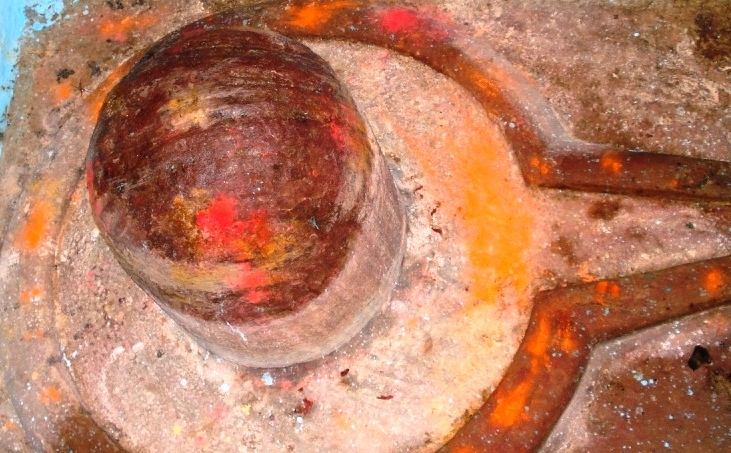

<?xml version="1.0" encoding="UTF-8"?><rss version="2.0"
	xmlns:content="http://purl.org/rss/1.0/modules/content/"
	xmlns:wfw="http://wellformedweb.org/CommentAPI/"
	xmlns:dc="http://purl.org/dc/elements/1.1/"
	xmlns:atom="http://www.w3.org/2005/Atom"
	xmlns:sy="http://purl.org/rss/1.0/modules/syndication/"
	xmlns:slash="http://purl.org/rss/1.0/modules/slash/"
	>

<channel>
	<title>Bhagirateshwar &#8211; Varanasi Temples</title>
	<atom:link href="index.html" rel="self" type="application/rss+xml" />
	<link>../../../../../index.html</link>
	<description>Temples of Varanasi as referred to in Kashi Khand</description>
	<lastBuildDate>Thu, 19 Jun 2025 05:16:46 +0000</lastBuildDate>
	<language>en-US</language>
	<sy:updatePeriod>hourly</sy:updatePeriod>
	<sy:updateFrequency>1</sy:updateFrequency>
	<generator>https://wordpress.org/?v=4.6.29</generator>
	<item>
		<title>BHAGIRATHESHWAR</title>
		<link>../../../../../shiva-temples/bhagiratheshwar/index.html</link>
		<pubDate>Sun, 09 May 2010 05:35:15 +0000</pubDate>
		<dc:creator><![CDATA[admin]]></dc:creator>
				<category><![CDATA[Bhagirateshwar]]></category>
		<category><![CDATA[Other Shiva Temples (A-D)]]></category>
		<category><![CDATA[Shiva Temples]]></category>
		<category><![CDATA[teerth]]></category>

		<guid isPermaLink="false">../../../../../p=261.html</guid>
		<description><![CDATA[Lord Vishnu was recounting various religiously important places, teerths etc. to Sage Bindu (Kashi Khand, Chapter 61). (BHAGIRATESHWAR) Devotees should bathe in Bhagirath Teerth and perform rituals for their forefathers. The devotees should then worship Bhagiratheshwar nearby. By performing the above religious rites, the devotees will be cleansed of all their sins howsoever heinous they [&#8230;]]]></description>
				<content:encoded><![CDATA[<p>Lord Vishnu was recounting various religiously important places, teerths etc. to Sage Bindu (Kashi Khand, Chapter 61).</p>
<p></p>
<p style="text-align: center;"><strong>(BHAGIRATESHWAR)</strong></p>
<p>Devotees should bathe in Bhagirath Teerth and perform rituals for their forefathers. The devotees should then worship Bhagiratheshwar nearby.</p>
<p>By performing the above religious rites, the devotees will be cleansed of all their sins howsoever heinous they may be. Bhagirat Teerth is not in existence now.</p>
<p><strong><span style="text-decoration: underline;">LOCATION OF BHAGIRATHESHWAR</span></strong></p>
<p>Bhagiratheshwar is located at Ck.11/11, near Brahmanal in the house of Devanand Chaturvedi.  This place falls opposite to Vani Vittan Shishu Mandir. There is a stone slab on which the name of lane viz. Dewan Bal Mukund Lane is inscribed. The above house is located on a path  perpendicular to the stone slab. People can travel upto Chowk by rickshaw and walk upto this place through Brahmanal, which is a famous landmark.  They can also travel by boat upto Manikarnika  Ghat and climb the steps.</p>
<p>&nbsp;</p>
]]></content:encoded>
			</item>
	</channel>
</rss>
